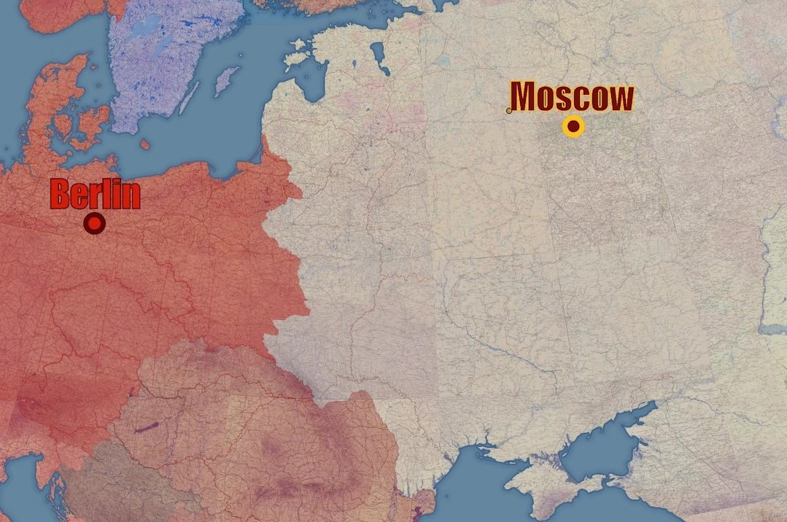
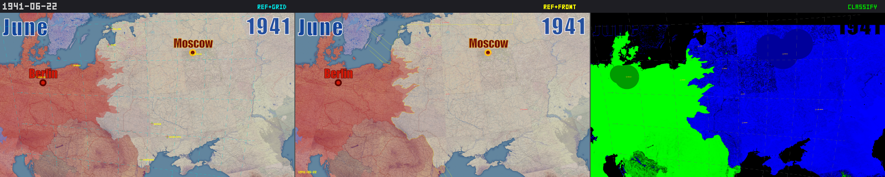
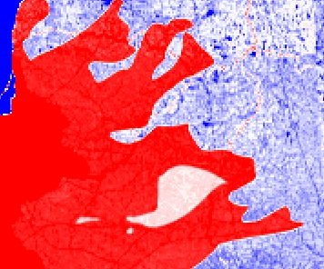
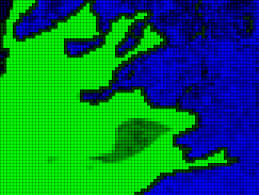
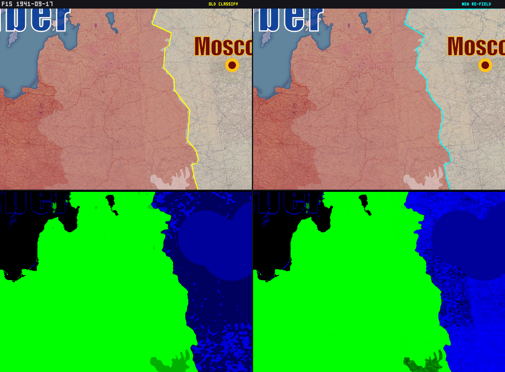
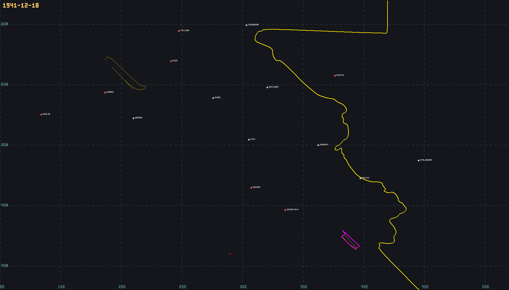
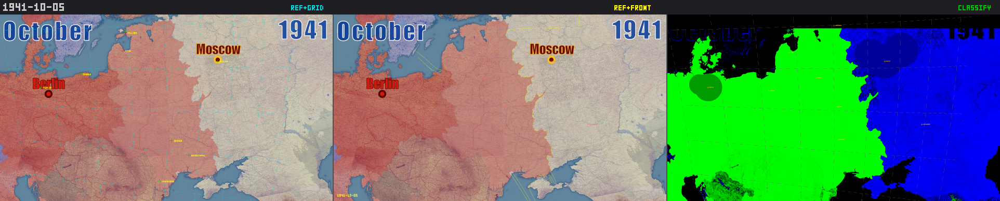

How we modeled the Eastern Front as a physics problem
and built an interactive simulation from 5,500 historical events
The simulation loops through 26 keyframe dates from June 1941 to May 1945. Use arrow keys to step through manually.
Open fullscreen →
Act I
The Idea
The Eastern Front of World War II stretched from the Arctic to the Black Sea. Over four years, the front line shifted across thousands of kilometers as armies of millions advanced, retreated, encircled, and were encircled. Miguel wanted to build an interactive map that showed this movement—not as a static image, but as a living simulation you could step through in time, watching the front line breathe.
The conventional approach would be to draw front lines by hand for each date, like an animated GIF of hand-traced maps. But that approach doesn't scale, doesn't allow for exploration, and most importantly, doesn't explain anything. Miguel chose a radically different approach: model territorial control as a continuous scalar field, like a physics simulation.

The reference timelapse frame that started the project—a beautiful cartographic rendering showing Axis (red) and Soviet (beige) territorial control, with Berlin and Moscow as anchor points.
Act II
Thirty Lines of Math
Every city is a point source in a continuous scalar field. Axis cities push the field positive. Soviet cities push it negative. The front line is the zero-crossing contour—the boundary where the field changes sign. The entire simulation is one equation:
field(lat, lon) = Σ (sign × w) / (1 + dist²)³
Cubed Cauchy kernel. That's the whole simulation.
There is something audacious about this. No special cases for encirclements, pockets, or salients. No pathfinding algorithms. No rule engine. Just arithmetic on labeled data points. Pockets emerge naturally as isolated positive regions in a negative sea. The front line emerges as the zero contour. All complexity lives in the data, not the algorithm.
Act III
The Event System
The simulation is driven entirely by events—small, atomic records that say what happened, where, and why. Each event is a tuple: a date, a city, a control state, and a set of labels. That's it. There are no other inputs to the system.
["1942-08-23", "vertyachy", "axis", {
"operation": "blau",
"unit_army_group": "ag_b",
"unit_army": "6th_army",
"unit_corps": "xiv_panzer_corps",
"unit_division": "16th_panzer",
"commander": "paulus",
"note": "16th Panzer Division crosses Don at Vertyachy,
drives 60km to Volga in single day.",
"attrition": 0
}]
The labels serve two purposes. Some are penalty labels—supply_disruption, attrition, air_superiority, frostbite_casualties—that reduce a city's effective weight in the density field. A city with supply_disruption: 0.5 and attrition: 0.3 has its weight reduced to 35% of nominal. The penalties compound multiplicatively. The rest are metadata labels—operation names, unit designations, commanders, notes—that explain the event in human terms. These don't affect the simulation directly, but they make the dataset self-documenting.
The system is event-sourced: the state at any date is computed by replaying all events up to that point. There is no mutable state. No database to migrate. The canonical history is a stream of immutable facts, and the current state of every city is a pure function of that stream.
Act IV
Campaigns and the Merge
The 5,500 events are not stored in a single file. They're partitioned across 12 campaign directories—barbarossa/, uranus/, kursk/, bagration/, berlin/—each containing numbered JSON files. The Barbarossa directory alone has dozens of files: 001-pockets.json, 004-june-opening.json, 005-july-advances.json. Each file has a metadata block that records who wrote it, when, and why.
A merge tool globs all 240 JSON files, deduplicates cities, concatenates events, sorts them by date, and produces a single 6 MB document: eastern-front.json. This is the write side of a CQRS architecture. The read side is a Rust builder that pre-computes density field grids, marching-squares contours, and city states for every date, then writes them to a SQLite database. The GPU (Metal on M4 Pro) computes all 1,067 dates in five seconds.
This partitioning is what made multi-agent collaboration possible. Multiple Claude agents worked in parallel, each assigned a campaign directory. A Barbarossa agent researched the opening weeks. A Uranus agent handled the Stalingrad encirclement—its directory grew to 38 files as the encirclement events were refined through dozens of iterations. A Kursk agent covered the summer of 1943. They could work simultaneously without merge conflicts because events were partitioned by directory, and the merge tool combined them deterministically.
240 JSON files, 12 campaign directories, one merge tool, zero conflicts.
A resource conservation principle prevented the most common failure of collaborative data entry: inflation. Resources—manpower, ammunition, fuel—were finite. Every resource at every city had to be traceable to an explicit event. Like Rust's ownership model applied to historical data, this constraint made structural corruption impossible. When the Uranus agent needed Soviet troops for the encirclement, those troops had to come from somewhere—from specific armies (5th Tank, 21st, 51st, 57th) with known troop strengths. The metadata block in each event file records the agent's reasoning, creating an audit trail.
Act V
The First Front Line
The first milestone was producing a front line that roughly matched reality for the opening of Operation Barbarossa—June 22, 1941. This required defining hundreds of cities along the pre-war border with their initial control states, then adding the events of the first weeks: the rapid German advance through the Baltics, the encirclement at Bialystok-Minsk, the drive toward Smolensk.

June 22, 1941—three-panel validation. Left: reference timelapse frame. Center: simulation with front line overlay. Right: density field classification (green = Axis, blue = Soviet).
The yellow contour line is the simulation's computed front line, overlaid on the reference timelapse. Watching these overlays progress through the months tells the story of Barbarossa better than any static map:
July 1941 — The invasion begins. The front line pushes east through the Baltics and toward Smolensk.September 1941 — Kiev falls. The front line reaches the gates of Leningrad and pushes toward Moscow.December 1941 — The deepest Axis advance. Winter and Soviet counteroffensives halt the push.
The yellow contour is not drawn by hand.
It emerges from the arithmetic of 5,500 events.
Act VI
The Extraction Pipeline
To validate the simulation against the reference timelapse, we built a front-line extraction pipeline. This is computer vision applied to cartography: take a frame from the reference video, extract where the front line is, and compare it to the simulation's computed contour. The pipeline works in stages:
Stage 0: Reference frame. The red-tinted region is Axis territory in the original timelapse.

Stage 1: Red-excess field. Color analysis identifies Axis-controlled pixels (red) vs Soviet (blue).

Stage 6: Final classification after sigmoid, median filter, island removal, and erosion.
The pipeline processes each reference frame through six stages: raw red-excess field computation, sigmoid transformation for contrast enhancement, median filtering for noise reduction, island removal for isolated pixels, downsampling to the simulation grid, and morphological erosion for boundary refinement. The output is a binary classification that can be directly compared to the simulation's density field sign.
This pipeline ran on all 60 frames of the reference timelapse, producing 60 comparison composites. Each one showed where the simulation agreed with the reference and where it diverged—giving us a precise map of what needed more event data.
Act VII
Iterative Refinement
The comparison pipeline enabled an iterative workflow: run the simulation, compare against reference, identify divergences, research the history, add events, repeat. Each cycle improved the simulation's accuracy. When the front line was too far east in Ukraine, it meant we were missing the rapid German advance through that sector. When pockets didn't form around Kyiv, it meant we needed encirclement events with supply disruption labels.

Side-by-side comparison during an iteration cycle. Top: reference overlay with front line. Bottom: density field classification (green = Axis, blue = Soviet). Left panels show the old version, right panels show the improved version after adding event data.
Act VIII
The Verification Grid
Beyond visual comparison, the simulation includes a quantitative validation system. For every event in the dataset, the test checks: does the density field sign at that location match the declared control state? If an event says Orel is Axis-controlled, the field at Orel must be positive. If it's negative, the event needs more surrounding data to flip the regional field.

Verification view for December 18, 1941. The yellow contour is the computed front line. Red dots are calibration cities. White dots are regular cities. Pink regions indicate pockets or contested areas.
This view is the simulation's most honest representation. No cartographic styling, no territorial shading—just the raw contour line on a geographic grid with labeled cities. You can see the front line running from Leningrad in the north, past Smolensk and Moscow, down through Kharkov to Rostov-on-Don, and along the Crimean coast. The bulge toward Moscow is visible. The Kerch pocket in Crimea shows as a pink region.
Act IX
The Tooling
What makes this project unusual is the depth of its tooling. The simulation itself is thirty lines of math. But surrounding it is an ecosystem of tools that make the work possible:
1
Merge pipeline
240 JSON event files across 12 campaign directories, merged into a single 6MB document, sorted by date.
2
Rust read-side builder
Pre-computes density field grids, marching-squares contours, and city states for every date. GPU-accelerated via Metal on M4 Pro. Outputs a SQLite database for instant UI loading.
3
GPU-accelerated optimizer
A Rust + wgpu compute shader that finds optimal city strengths to minimize validation failures across the entire timeline.
4
Visual comparison suite
Puppeteer-based screenshot capture with 8-point geographic calibration, affine transforms for reference alignment, and multi-panel composite generation.
5
Front-line extraction pipeline
Computer vision pipeline: red-excess field → sigmoid → median filter → island removal → erosion → contour extraction. Turns reference video frames into comparable geometry.
6
Field validation test
~1 million city×date sign checks. For every event, verifies that the density field sign matches the declared control state.
Act X
What Emerged
The project today contains 5,500 historical events across 1,450 cities, organized in 240 JSON files covering every major campaign from Barbarossa to Berlin. The simulation produces front lines that visually match the reference timelapse across the first year of the war, with coverage extending through 1942 and into the later campaigns.
But the most interesting thing about the project is not what it produces. It's what it is. It's a labeled dataset where every data point explains its own causality. When you look at the event for the 16th Panzer Division crossing the Don at Vertyachy, you don't just see a control state change—you see the corps, the division, the commander, the troop count, and a note explaining that they drove 60km to the Volga in a single day. The simulation is arithmetic. The understanding is in the labels.
The simulation is arithmetic. The understanding is in the labels.

October 5, 1941. Three-panel validation at the peak of the Axis advance. The simulation's front line (yellow) closely tracks the reference timelapse boundary. The classification view (right panel) confirms the field polarity matches territorial control.
Coda
The Intractable Failures
Not every problem was solvable. The project's memory file contains a section titled "Intractable Failures (Don't Waste Time)." Deep Don bend cities like Frolovo and Ilovlya sit in such massive Soviet rear-area field that no amount of Axis strength can flip them. Volga east-bank cities near Stalingrad are overwhelmed by Axis field from the opposite bank. Morozovsk is simply too deep in the Soviet zone.
These failures reveal the limits of the model. A cubed Cauchy kernel with an 8-degree cutoff makes certain geographic configurations unreachable. The Don bend is, in density-field terms, a deep potential well. No local perturbation can overcome the regional gradient.
The memory file's advice—don't waste time—is itself knowledge. Knowing what you can't do is as valuable as knowing what you can. The list of intractable failures is a map of the model's boundaries, and acknowledging those boundaries honestly is better than papering over them with special cases.
This is maybe the deepest lesson: a model that is honest about its limits earns more trust than one that hides them. The simulation is thirty lines of math, and it will always be thirty lines of math. What grows is the data—the labeled events that explain, one city at a time, what happened on the Eastern Front.